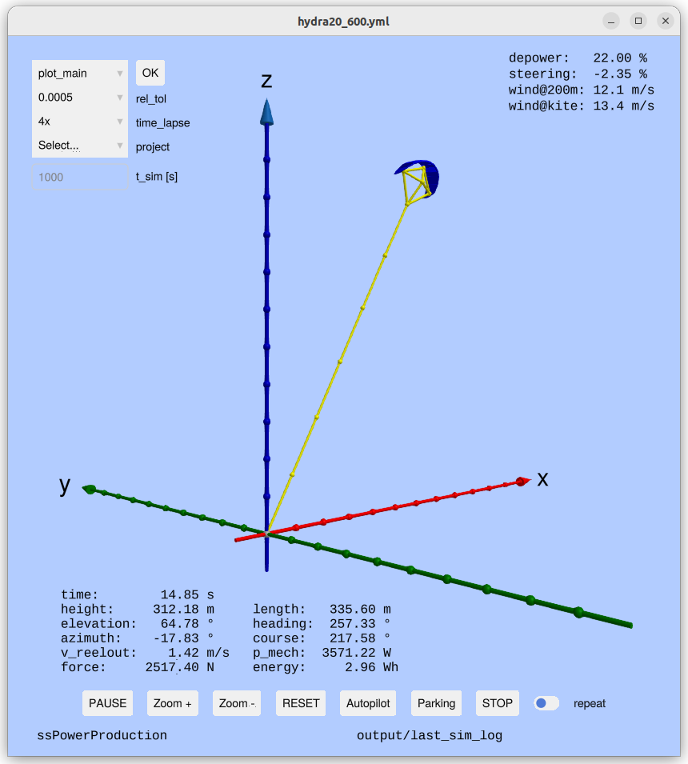

Examples, if installed as Package
The example scripts can be copied to a local examples/ folder with:
using KiteControllers
KiteControllers.copy_examples()Or install everything (examples + required packages) in one step:
KiteControllers.install_examples()Examples, if installed using Git
Launch Julia with:
jlThen you get the menu of the examples by typing:
menu()autopilot.jl — Full Autopilot Simulation
The primary example demonstrating the complete control stack.
Features:
- Loads a kite model (
KPS4) and kite control unit (KCU) - Creates all settings (
WCSettings,FPCSettings,FPPSettings) - Builds a
SystemStateControland connects it to the kite model - Runs a real-time simulation loop with a 3-D viewer
Screenshot:

You can select one of the four, pre-defined projects, run the simulation, and on the left you have menu options to print the statistics or show one of the many 2D plots, visualizing the results.
parking_4p.jl — Parking Controller
Demonstrates how to bring a four-line kite to a stable parking position at high elevation using on_parking.
using KiteControllers, KiteModels
# create ssc as above, then:
on_parking(ssc, tether_length=200.0)minipilot.jl — Minimal Autopilot
A stripped-down autopilot without 2D plots for understanding how to build a GUI based simulator. Exposes the core control loop in ~50 lines.
batch_pilot.jl — Batch Simulation
Runs multiple simulations back-to-back over a range of wind speeds and records key statistics (mean power, reel-out speed, etc.) to an Apache Arrow file in the output/ folder.
Run from the command line:
bin/batch_pilot hydra20_426Statistics are written to output/batch-<project>_stats.yaml and the full time-series log to output/batch-<project>.arrow.
batch_plot — Post-processing Viewer
Interactive command-line tool for visualizing the Arrow log files produced by batch_pilot. Backed by examples/batch_plot.jl and the launcher script bin/batch_plot.
Basic usage:
# Open the interactive plot-selection menu for a project
bin/batch_plot hydra20_426
# Run a specific plot directly (window stays open until closed)
bin/batch_plot hydra20_426 plot_main
bin/batch_plot hydra20_426 plot_elev_az
# List all projects that have a log file in output/
bin/batch_plot --list
# List all available plot commands
bin/batch_plot --list-commandsAvailable plot commands:
| Command | Description |
|---|---|
statistics | Print summary statistics to the terminal |
plot_main | Height, elevation, azimuth, tether length, force, reel-out speed, cycle |
plot_power | Force, reel-out speed, mechanical power, energy, acceleration |
plot_control | Elevation, azimuth, heading, force, depower, steering, FPP state |
plot_control_II | Azimuth, heading, steering, course, psi_dot, NDI gain |
plot_winch_control | Elevation, azimuth, force, set-force, reel-out speed, winch state |
plot_aerodynamics | Lift-to-drag ratio, angle of attack, steering, yaw rate, side-slip |
plot_elev_az | Elevation vs. azimuth scatter |
plot_elev_az2 | Elevation vs. azimuth from cycle 2 onward |
plot_elev_az3 | Elevation vs. azimuth from cycle 3 onward |
plot_side_view | Side view (height vs. x position) |
plot_side_view2 | Side view from cycle 2 onward |
plot_side_view3 | Side view from cycle 3 onward |
plot_front_view3 | Front view from cycle 3 onward |
tune_4p.jl — Controller Tuning
Interactive script for tuning the flight path controller gains (p, i, d, gain) for a four-line kite. Changes gain values and immediately re-runs the simulation to visualize the effect.
joystick.jl — Manual Joystick Control
Allows manual steering via a gamepad or joystick while the winch is controlled automatically or half-automatically by the WinchController. Useful for learning how to steer a kite manually. Half-automatically means you provide a set point for the reel-out speed manually, but the WinchController ensures that the maximal and minimal force are respected.
Learning Resources
| File | Purpose |
|---|---|
autopilot.jl | Full autopilot — start running this as first step |
minipilot.jl | Minimal autopilot without 2D plotting, good for understanding the code |
parking_4p.jl | Parking of the 4 point kite with disturbance |
batch_pilot.jl | Batch simulations of projects |
batch_plot | Post-processing and interactive plotting of batch logs |
tune_4p.jl | Gain tuning of the parking controller |
joystick.jl | Manual steering with automated or half-automated winch control |
plots.jl | Post-processing and plotting of Arrow log files, not to be executed on its own |
stats.jl | Statistical analysis of batch results, not to be executed on its own |
Configuration Files
All settings are stored as YAML files in the data/ folder.
| File | Settings struct |
|---|---|
settings.yaml | General kite / simulation settings (KiteUtils.Settings) |
system.yaml | System-level parameters |
fpc_settings.yaml | FPCSettings — flight path controller |
fpp_settings.yaml | FPPSettings — flight path planner |
wc_settings.yaml | WCSettings — winch controller |
Copy the default configuration files with:
KiteControllers.copy_control_settings()